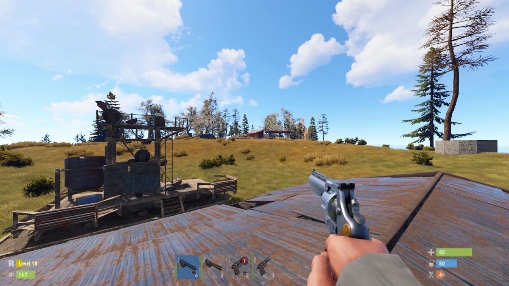
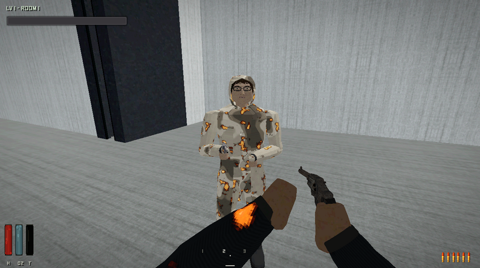
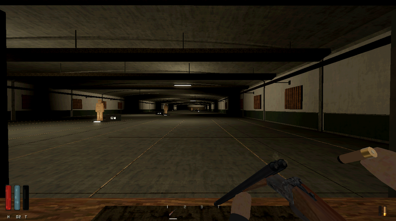
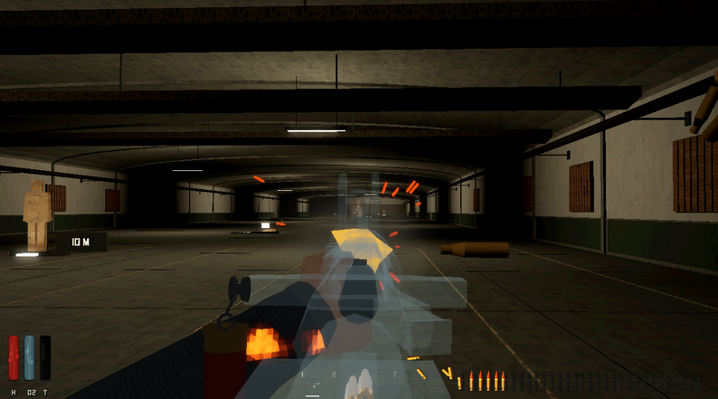
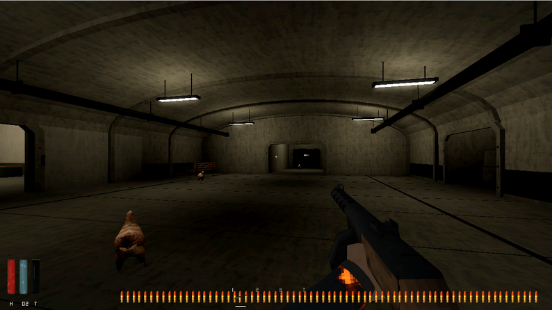
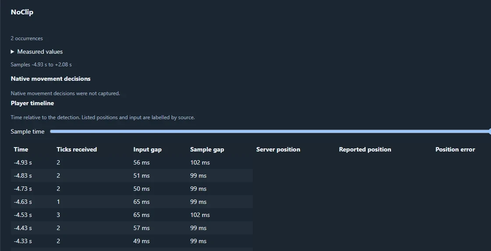
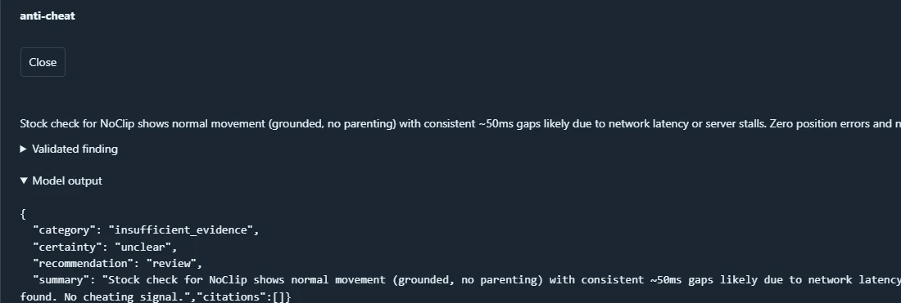

> Where does the parser handle blank input?
In parser.py, parse_line checks the input before parsing it.
parser.py
def parse_line(raw):- return raw or None+ return raw.strip() or None
› 1 file changed +1 -1
Clip unavailable. Extract the whole ZIP and keep the assets folder next to the HTML.
Enable JavaScript to move through the projects.